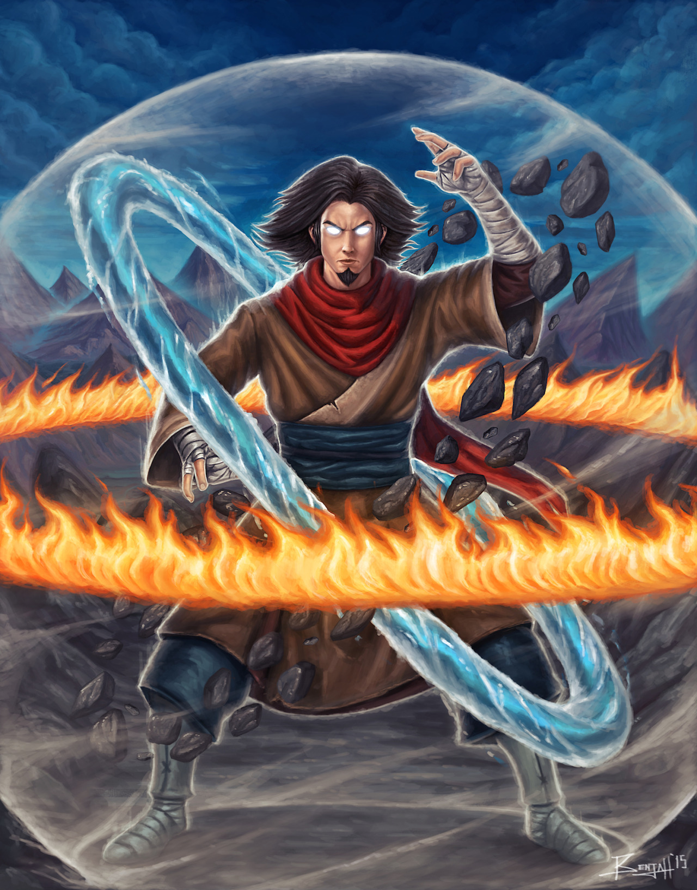
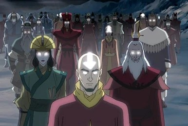

Az avatárok képesek irányítani mind a négy őselemet – a vizet, a földet, a tüzet és a levegőt. Az Avatar lényege, hogy fenntartsa a világ egyensúlyát, megakadályozza a konfliktusokat a különböző népek között, és helyreállítsa a rendet, ha az megsérülne.
Az Avatar egy szellemi lény, aki folyamatosan újraszületik, és minden életében egy olyan személy formájában jelenik meg, aki képes irányítani mind a négy őselem. Az Avatar ciklikusan újraszületik az elemi nemzetek között – az északi víztörzs, a föld királysága, a tűz népe és a levegő nomádjai –, minden egyes inkarnációval a következő nép szülötte lesz, ezzel biztosítva az egyensúly fenntartását a különböző kultúrák és elemi irányzatok között.
Az első avatár

Wan története több ezer évvel ezelőtt játszódik, egy olyan korban, amikor a világ teljesen más volt. Ekkor az emberek különféle városokban, az óriási szellemek világától elválasztva éltek, és az elemi irányítás képességét csak ideiglenesen kapták meg különféle szent állatok, például az oroszlánteknősök révén.
Wan különleges ember volt, aki nem akarta elfogadni az akkori társadalmi korlátokat és szabályokat. Egy nap, miután megszerezte a tűz irányításának képességét, elindult egy veszélyes kalandra, ami során találkozott a szellemek világával. Egy fontos pillanatban véletlenül elszabadította Raavát és Vaatut, két hatalmas ellentétes erővel rendelkező szellemet, akik az egyensúly és a káosz megtestesítői voltak.
Wan végül összefogott Raavával, a fény és egyensúly szellemével, hogy legyőzzék Vaatut, a sötétség és pusztítás szellemét. Ekkor Wan fokozatosan elnyerte az összes elem irányításának képességét, és ő lett az első olyan ember, aki egyesítette az elemeket. Raavával való kapcsolata miatt az Avatar ciklus kezdete is őhozzá köthető, mivel Raava általa vált képessé az újjászületésre, lehetővé téve, hogy minden egyes új Avatar magában hordozza az előző Avatárok tudását és erejét.
Wan története azért különösen fontos az Avatar-ciklus szempontjából, mert ő rakta le az alapjait annak a küldetésnek, hogy az Avatar fenntartsa a világ egyensúlyát. Az ő áldozatos munkája, elszántsága és Raavával való szellemi egyesülése tette lehetővé, hogy az Avatar egy örökkévaló, szüntelenül újraszülető békefenntartó erővé váljon.
Az Avatár állapot

Az Avatar állapot egy különleges és rendkívül erőteljes szellemi és fizikai állapot, amelyben az Avatar kapcsolatba lép az összes korábbi Avatar erejével és tudásával. Ez az állapot az Avatárok egyik legerősebb képessége, amely lehetővé teszi számukra, hogy minden korábbi inkarnációjuk tapasztalatát, erejét és elemi irányítási képességeit egyesítsék. Az Avatar állapot különösen akkor válik fontossá, amikor az Avatar kritikus helyzetekben rendkívüli erőre vagy bölcsességre szorul, hiszen ilyenkor az összes korábbi Avatar ereje és tudása támogatja őt.
Amikor az Avatar belép ebbe az állapotba, fizikai megjelenése is megváltozik: a szemei (és a Levegő nomádjaihoz tartozó Avatárok esetében a tetoválásaik is) fényesen ragyognak, ami az őselemek erejének intenzív kifejeződése. Az Avatar ilyenkor teljesen uralja mind a négy elemet, és képes az elemeket szinte korlátlan erővel használni, akár egyszerre is, ezáltal sokkal nagyobb pusztító vagy védekező hatékonyságot ér el, mint általában.
Az Avatar állapot azonban nem csak nagy erőt ad, hanem nagy kockázattal is jár. Ha az Avatar ebben az állapotban meghal, a ciklus megszakad, és az Avatar többé nem tud újraszületni, mivel a Raavával való szellemi kapcsolat megszakad. Ezért az Avatar állapot használata veszélyes, és az Avatárok általában csak végső esetben lépnek be ebbe az állapotba.
Az Avatar állapot aktiválása egyes Avatároknak könnyebben megy, míg másoknak nehezebb elérni ezt az állapotot, és bizonyos szellemi felkészülés vagy meditáció szükséges hozzá. Az Avatar állapot elsajátítása és kontrollálása az egyik legnagyobb kihívás az Avatar számára, mivel meg kell tanulnia, hogyan használja ezt a hatalmat anélkül, hogy elveszítené önmaga felett az irányítást.